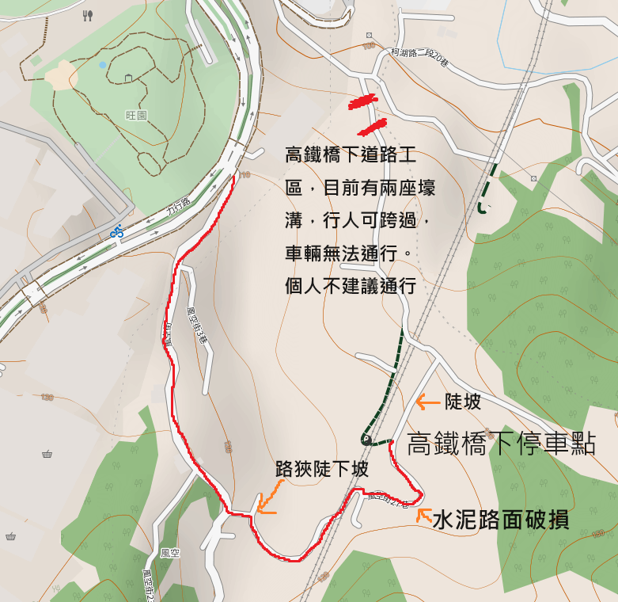

2023/09/09 20230909-新竹風空老樟樹
最近又燃起了都是探險的動力，於是利用下午的空檔，來挑戰這一個新竹算是難到的一個景點，新竹風空老樟樹與土地公廟。
新竹風空位在科學園區東南方，至高鐵高架橋之間，這裡有一座土地公廟，後方有一棵被認定為全市最老的老樟樹，原本該處位於高鐵預定路線上要被砍除，但後來高鐵公司為此微幅調整高鐵路線避開此處，也為此拍了一支廣告宣傳。詳細的細節可參閱維基百科 風空開山伯公
前陣子也看到 Tony 也曾來訪過，想說自己也來探勘一下路線。
直接說結論的話，目前不建議使用徒步或騎單車以外的方法前往，北面比較便利寬敞的路線目前因高鐵橋下道路的工程，目前挖了應該是未來水溝的橫向壕溝，道路受阻，機汽車無法通行，腳踏車可以扛車通過。如果工程完成的會建議由此通行。南面則是路狹與路面破損，要小心通行。

最後就附上目前現場的照片吧。
[{"url":"https://filedn.eu/liIoHTtj1XaLqq0FE6OVlv0/blog/img/Life/20230909/P_20230909_175550.jpg","alt":""},{"url":"https://filedn.eu/liIoHTtj1XaLqq0FE6OVlv0/blog/img/Life/20230909/P_20230909_175825.jpg","alt":""},{"url":"https://filedn.eu/liIoHTtj1XaLqq0FE6OVlv0/blog/img/Life/20230909/P_20230909_175520.jpg","alt":""},{"url":"https://filedn.eu/liIoHTtj1XaLqq0FE6OVlv0/blog/img/Life/20230909/P_20230909_175822.jpg","alt":""},{"url":"https://filedn.eu/liIoHTtj1XaLqq0FE6OVlv0/blog/img/Life/20230909/Screenshot_20230909-190251.jpg","alt":""}]
本部落格所有文章除特別聲明外，均採用CC BY-NC-SA 4.0 授權協議。轉載請註明來源 LFsWang's World！
相關推薦

2023-04-23
2023/04/23 湖口老街
今天下午查看了一下湖口有設立 UBike 了，讓原本從湖口車站到湖口老街的路途有了稍便捷的方案，於是就搭火車前往了。之前之所以沒去湖口老街，就是因為大眾運輸不便，至少往返火車站到老街的公車不多，今天實地前往，也發現確實沒什麼人利用公車，大多是自駕前往，部分人則選擇使用 UBike。 湖口車站門口的 UBike 站點常態性的沒車，可以步行到附近的新竹縣湖口鄉公所借，中間會經過湖口市場，下午也是頗有人潮可以逛逛。 從火車站到老街幾乎是一直線的緩上坡，沒什麼車，但也沒什麼建築物，如果遇到颳風日應該稱不上能優閒地騎乘。到達老湖口天主堂後，取左邊的單行道前往停車場，一路騎進去到接近廟口的地方， Ubike 站點位於公廁旁。可以發現原本的機車考照練習區已經蓋起建築物了，只剩下地上的油漆痕跡。 往停車場路上有一座通過國道一號的涵洞，非常多人，查了一下健行筆記，後方有仁和步道/金獅步道，約 2KM 的路程，而且正值賞花季節，但到達時間已偏晚，且騎腳踏車有點累，或許就下次再專門前來。 整個老街基本上算是熱鬧，但又不壅擠，逛起來相當愜意，如果把行程修正一下，改成搭 14:20...

2023-07-16
2023/07/12-15 中國北京 兩岸清華交流賽
今年清華大學的資工系的傳統「兩岸清華交流賽」在疫情後正式恢復為實體舉辦了。據北京的老師表示今年正好是這活動的第 25 年。蠻有幸的我自 2016 年第一次以選手參加這場交流，到現在已經是以教練身分隨隊出席。 今年輪到北京清華來主辦，同學一行人凌晨便搭著系辦定的車輛前往機場搭乘 7 點 40 的飛機。飛機在接近北京時氣流相當的不穩定，看新聞 10 號也有中國國內航班因往北京的亂流而導致機組員受傷的事故。抵達至北京時，外頭正一片大雨。具導遊的說法，這是北京乾旱以來，這兩個月的第二場雨。 第一天基本上由於大家前天幾乎都沒睡好，所以北京的同學帶我們回飯店吃午餐後後，大家就回房間睡了，等著晚上與香港的同學會合吃飯店一旁的食平方烤鴨店。 第二天再交送完系辦要贈與給北京與香港兩校的禮品後，教練一行人便被帶到另一間教室觀賽。當然程式設計競賽的可看度不是很高，因此基本上就是用筆電連回台灣做工作，然後在稍微盯一下賽場的變化。北京命題時似乎不會放較簡易的題目，因此大多數隊伍都在比賽過了 1...